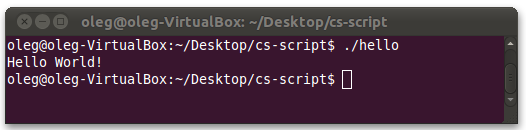

Mono is an Open Source implementation of CLR. It is a cross-platform runtime, which is available for Android, BSD, iOS, Linux, Mac OS X, Windows, Solaris, and Unix operating systems. While CS-Script was designed to run on .NET (on Windows) it can run on on Mono on Linux as well.
CS-Script on Windows is all about integration with the operating
system and the development tools. However on Linux it is all about
simplicity, light weight and ease of use. Thus if you want to run
C# scripts on Linux all you need to do is just a single CS-Script
engine file. The following is a very brief demonstration of how you can
set and run CS-Script on Linux:
First of all you need to copy the script engine file (cscs.exe)
to the location of your choice on your Linux file system. Starting from
version 3.0 CS-Script engine has full built-in support for Mono and the
file (cscs.exe)
can be taken from the root directory of the CS-Script distributables.
However if you are trying to run CS-Script on earlier version of Mono
you may need to use corresponding cscs.exe file form <cs-script>/Lib/Bin.
The script engine v3.0 was tested under
Mono v2.6.7 on Linux (Ubuntu 11.04). This version of Mono is an
equivalent of MS.NET v3.5 thus the script engine file was taken from
<cs-script>/Lib/Linux in the distributables (the same executable as in <cs-script>/Lib/Bin/NET 3.5).
Running CS-Script
Note: Ubuntu 11.04 comes with Mono 2.6.7 preinstalled.
or
Note: you can omit command "mono" as the
shell is smart enough to understand that cscs.exe is a n executable
targeting Mono and it will load the executable into Mono
environment even if you did not requested it in the command line.
Also note that all command-line switches
on Linux should be specified with prefix '-' in contrary to the Windows
environment where the prefix is character is '/'.
Note: if CSCSRIPT_DIR environment variable is not set the "Home dir" value is reported as "<not integrated>".
Running C# script
The easiest way of preparing the C# script is to execute script engine with "-s" parameter (print sample script) and redirect output in the file.
In the terminal execute the following command:
//css_reference System.Windows.Forms; |
Now you can execute the script with the following command:
It is also possible to load the script in MonoDevelop for debugging:
Changing the way C# scripts run
You probably noticed that the sample script produced in the previous step contains a template for the hashbang. If you update the template with the proper path to the script engine you will be able to execute the script without specifying the path to the script engine.
Another useful execution option is a possibility to execute scripts
containing no class definition (classless scripts). You can enable this
functionality by specifying "-ac" (autoclass) parameter.
You can combine these two useful execution options:
#!/home/oleg/Desktop/cs-script/cscs.exe -nl -ac |
This would produce the following output:

#!/home/oleg/Desktop/cs-script/cscs.exe -nl -precompiler:custom_autoclass.cs |
And of course virtually all features available on Windows are also
available on Linux (e.g. referencing another scripts or assembly,
converting to executable). Thus for example conversion of the script
into executable is as simple as a trivial execution command one extra
parameter:
The parameter "-e" instructs the script engine to produce the hello.exe executable instead of executing the script. Note that hello.exe is just a normal managed executable but not a script launcher containing embedded script engine and the script itself.
Yes, CS-Script can be run on Mono, however some functionality may not be available (depending on the Mono version):
Restriction: The referenced in the code assemblies cannot be loaded
automatically.
Cause: This is because fusion.dll is not available on Mono. This
COM dll is used to resolve the namespace to the assembly. This is unlikely to
be changed in the future unless Mono developers provide alternative means for
namespace-to-assembly resolving.
Work around: Instruct the engine to load assemblies explicitly. Make sure all GAC assemblies are specified as non-searchable (see Using .NET assemblies for details).
Acknowledgments
The initial work on testing/adopting CS-Script on Linux was done by Alexander Prokopyev (http://www.aulix.com/mono-vb-net-scripting-host). Because of his enthusiasm and the initiative I decided to rework the script engine and embed Linux support by default.
Oleg Shilo
Command-line interface | Autoclass | Precompilers